Fingerprint¶
Feature Extraction Overview¶
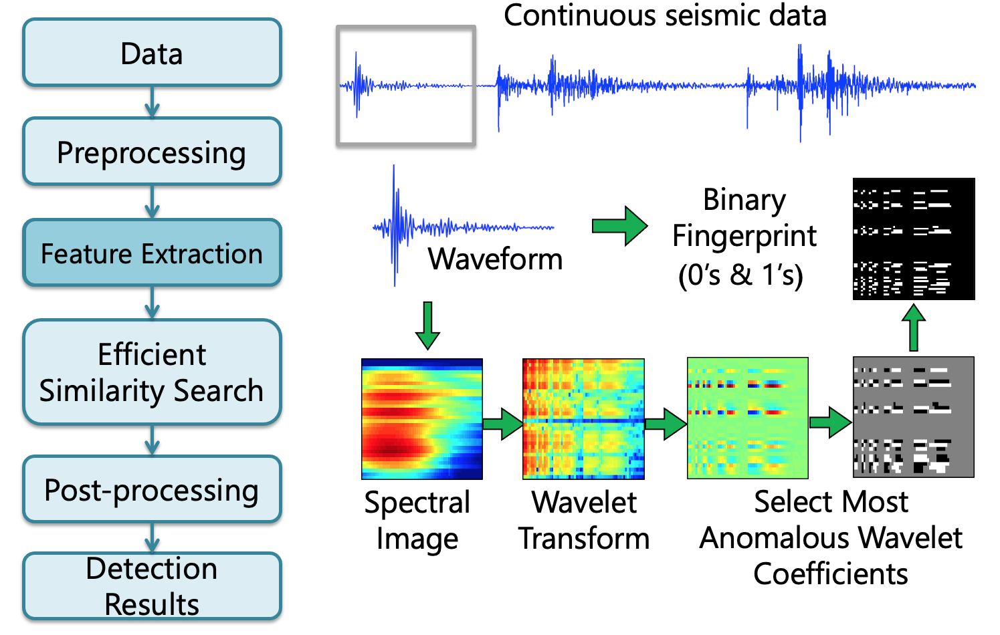
Step 1: Time Series --> Spectrogram¶
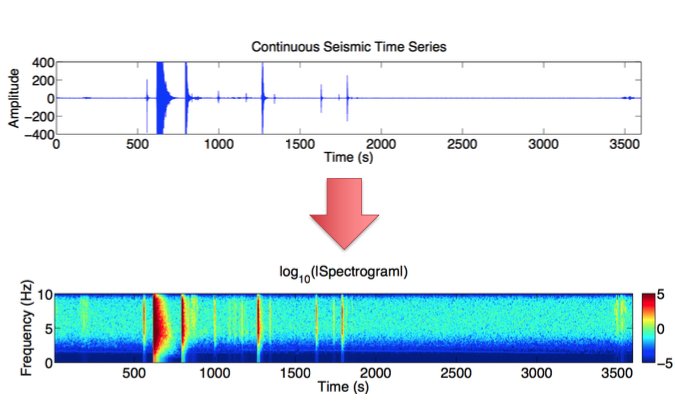
Step 2: Spectrogram --> Spectral Images¶
- To find short duration events, divide spectrogram into overlapping spectral images
- Long lag --> fewer spectral images to compare --> fast
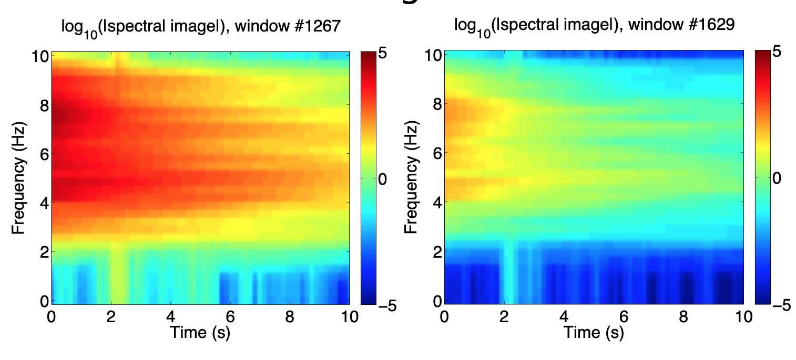
Step 3: Spectral Image --> Wavelet Transform¶
- Goal: compress nonstationary seismic signal
- Compute 2D discrete wavelet transform (Haar basis) of spectral image to get wavelet coefficients
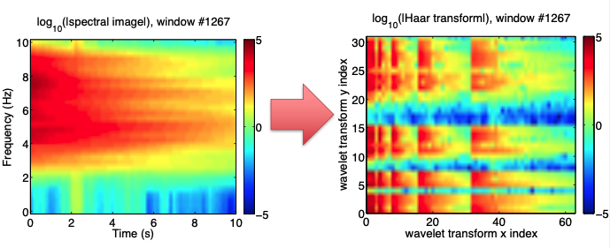
Step 4: Spectrogram --> Spectral Images¶
- Key discriminative features are concentrated ina few wavelet coefficients with highest deviation
- Deviation defined by median/MAD over entire data set
- Keep only sign (+ or -) of these coefficients, set rest to 0
- Data compression, robust to noise
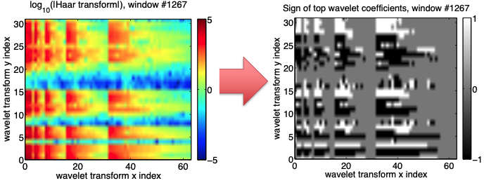
Step 5: Spectrogram --> Spectral Images¶
- Fingerprint must be compact and sparse to store in database
- Convert top coefficients to a binary sequence of 0’s, 1’s
- Negative: 01, Zero: 00, Positive: 10
- Convert top coefficients to a binary sequence of 0’s, 1’s
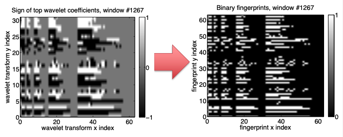
How do we measure similarity?¶
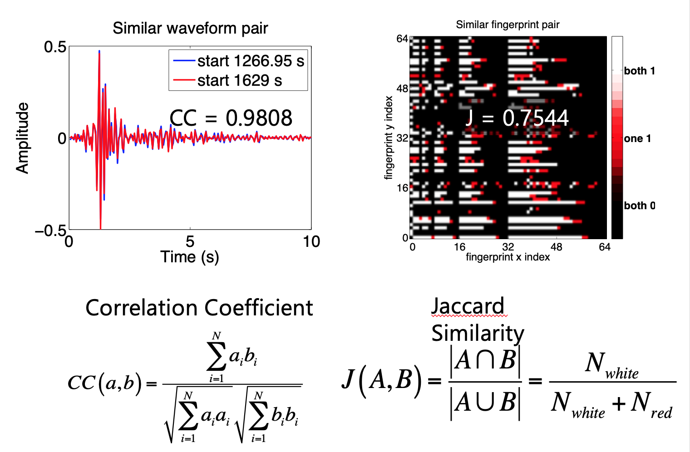
Fingerprint Parameters¶
{
"fingerprint": {
"sampling_rate": 20, # Sampling rate (Hz)
"min_freq": 0.0, # Bandpass frequency (Hz) - minimum
"max_freq":, 10.0, # Bandpass frequency (Hz) – maximum
"spec_length": 6.0, # Time window length (s) for spectrogram
"spec_lag": 0.2, # Time window lag (s) for spectrogram
"fp_length": 32, # Spectral image length (samples)
"fp_lag": 5, # Spectral image lag (samples)
"k_coef": 200, # Number of wavelet coefficients to keep
"nfreq": 32, # Final spectral image width (samples)
"mad_sampling_rate": 1, # Median/MAD sampling fraction of data
"mad_sampling_interval": 86400 # Median/MAD sampling frequency (s)
}
}
Note
Need one input file per component at each station:
fp_input_CI_CDY_EHZ.json
How to select bandpass filter?¶
- Filter can be different for different stations and components
- Contain as much of your desired earthquake signal as possible; not too narrowband
- Remove frequencies with repeated noise: important
- View sample spectrograms to empirically determine these noisy frequencies (output as .png image files):
- Twice a day (day and night: cultural noise variations)
-
Once a month or once a day – sample randomly
-
Usually 0-2 Hz has repeated noise; sometimes >20 Hz
-
Without this step, similar noise signals will dominate your detections --> you will not find earthquakes
-
May want to avoid teleseismic event detection
- Lower limit 3-4 Hz
-
4-12 Hz generally works well as default
Example: Bandpass filter selection, given sample spectrogram¶
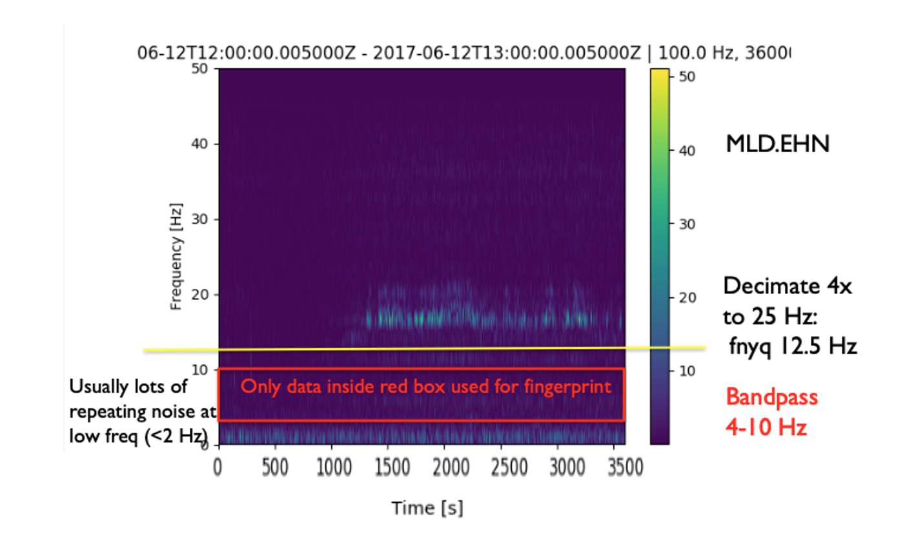
"spec_length": 6.0, # Time window length (s) for spectrogram
"spec_lag": 0.2, # Time window lag (s) for spectrogram
"fp_length": 32, # Spectral image length (samples)
"fp_lag": 5, # Spectral image lag (samples)
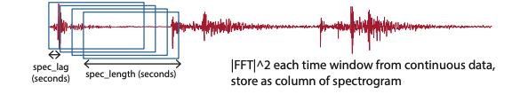
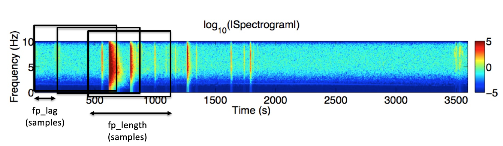
Info
Spectral image (and fingerprint) length: 12.4 seconds
Spectral image (and fingerprint) lag: 1 second
-
Choose parameters so that entire earthquake waveform (P,S,coda) fits into
fp_lengthtime window- Not too short (just P or S arrival), but not too long (otherwise adds noise)
- Choose same parameters for all components at all stations
- Adjust
spec_lengthandfp_lengthvalues fp_length(samples) should be a power of 2- Required for the wavelet transform. If
fp_lengthis not a power of 2, each spectral image will be downsampled to the next smallest power of 2.
- Required for the wavelet transform. If
-
spec_lagshould be short with >95% overlap between adjacent time windows; 0.05 to 0.2 seconds is a good default fp_lag: can be slightly longer with >85% overlap between adjacent spectral images; 0.5 to 2 seconds is a good default
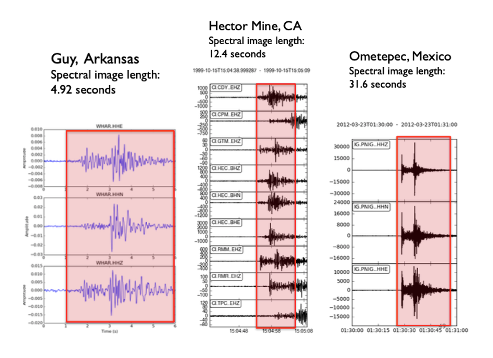
"k_coef": 200, # Number of wavelet coefficients to keep
"nfreq": 32, # Final spectral image width (samples)
- Spectral image width will be resized (usually downsampled) to
nfreqsamples- Initial spectral image width is 2(
spec_length)(max_freq-min_freq) samples: depends on bandpass filter nfreqmust be a power of 2 for wavelet transform; 32 is good default value
- Initial spectral image width is 2(
- Each spectral image (and wavelet-transform) has dimensions =
nfreq*fp_length- This example: 32*32 = 1024 elements
- To set
k_coef, keep ~20% of most anomalous wavelet coefficients- This example: 200/1024 ~ 19.5%
- Fingerprint has twice as many elements as spectral image
- This example: 2 * 1024 = 2048 elements
FAST Fingerprints: Sparsity Parameter¶
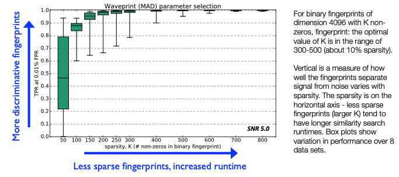
"mad_sampling_rate": 1, # Median/MAD sampling fraction of data
"mad_sample_interval": 86400, # Median/MAD sampling interval (s)
- For each coefficient, compute median/MAD statistics over entire data set. This step determines which
k_coefwavelet coefficients to keep.- But if data set is too long (months-years), compute statistics over a representative sample of data
mad_sampling_rate: fraction of entire continuous data set used to compute median/MAD- Duration of sampled data set = (
mad_sampling_rate) * (continuous data duration) should not exceed 1 week, otherwise may not fit in memory
- Duration of sampled data set = (
- Retrieve sample of data for median/MAD statistics once per
mad_sample_interval- 86400 s = 1 day is a good default value
- Exact time of sample is determined randomly: expect different numbers every time you run this
-
Median/MAD for each coefficient: pre-computed and stored in a text file, then read in during fingerprint generation
data/waveforms${STATION}/mad/mad*.txt
-
Rule of thumb
- Duration <1 week: set to 1 (use entire data set for sample)
- Duration weeks – months: set to 0.1 (sample 10% of data)
- Duration >1 year: set to 0.01 (sample 1% of data)
-
Runtime-accuracy tradeoff
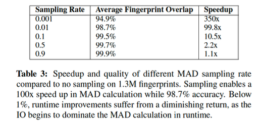
"performance": {
"num_fp_thread": 8, # Number of parallel processes
"partition_len": 86400 # Continuous data partition (s)
},
-
Can generate fingerprints in parallel by setting
num_fp_thread> 1- Each process gets one continuous data file
- Better parallelization if you have one mseed file per day, rather than one per month
- Each process gets one continuous data file
-
Generate fingerprints
partition_lenat a time- 86400 s (1 day) is a good default value
-
Changing these “performance” parameters should not affect the final results
"data": {
"station": "CDY",
"channel": "EHZ",
"start_time": "99-10-15T13:00:00.0", # Time format: YY-MM-DDTHH:MM:SS.S
"end_time": "99-10-16T09:46:44.0",
"folder": "../data/waveformsCDY/", # folder with input data
"fingerprint_files": [ # Usually finerprint_files, MAD_samples_files should be the same; can have list of multiple files for input continuous data
"Deci5.Pick.19991015130000.CI.CDY.EHZ.sac"],
"MAD_sample_files": [
"Deci5.Pick.19991015130000.CI.CDY.EHZ.sac"]
}
- OUTPUTS
${folder}/fingerprints/- Fingerprints from each continuous data file (can delete these later):
fp_* - Single file with all fingerprints:
${STATION}.${CHANNEL}.fp - For example:
data/waveformsCDY/fingerprints/CDY.EHZ.fp
- Fingerprints from each continuous data file (can delete these later):
${folder}/timestamps/- Timestamp (YYYY-MM-DDTHH:MM:SS.SSS) for each fingerprint
- Timestamps from each continuous data file (used later for global index calculation):
ts_*
Global Index: Inputs & Outputs¶
- Input file:
global_indices.json
{
"index_folder": "../data/global_indices/", # Output folder
"fp_param_dir": "../parameters/fingerprint/", # Input folder
"fp_params": ["fp_input_CI_TPC_EHZ.json", "fp_input_CI_RMR_EHZ.json", # Fingerprint input files for all components and stations to use for detection
"fp_input_CI_RMM_EHZ.json”, "fp_input_CI_HEC_BHE.json“,
"fp_input_CI_HEC_BHN.json", "fp_input_CI_HEC_BHZ.json“,
"fp_input_CI_CPM_EHZ.json", "fp_input_CI_GTM_EHZ.json",
"fp_input_CI_CDY_EHZ.json"]
}
- Outputs:
- Global start time “t0” for index 0 (YYYY-MM-DD THH:MM:SS.SSS), fingerprint input file names:
global_idx_stats.txt - Global index files for each channel, containing global index of each fingerprint:
${STATION}_${CHANNEL}_idx_mapping.txt
- Global start time “t0” for index 0 (YYYY-MM-DD THH:MM:SS.SSS), fingerprint input file names:
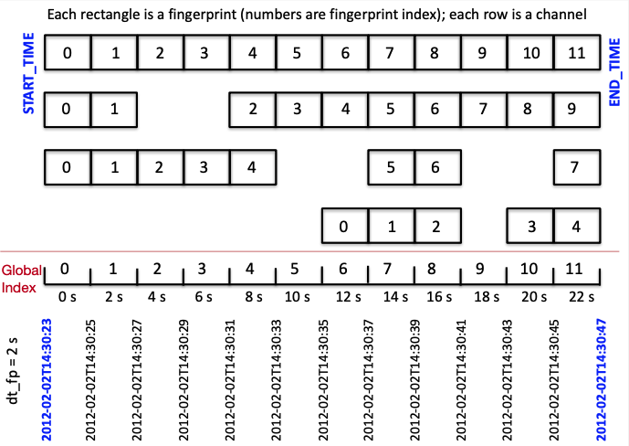
Sample Fingerprint Parameters¶
Find a sample fingerprint parameters json file here.
You can duplicate this file for each component and change the parameters as needed. You must edit the data section of the file and change the filename for each component.
Follow the file naming convention: fp_input_NETWORK_STATION_CHANNEL.json
Example fingerprint parameter settings:
{
"fingerprint": { (fingerprint settings)
"sampling_rate": 100, (sampling rate in Hz)
"min_freq": 2.0, (min bandpass frequency in Hz)
"max_freq": 20.0, (max bandpass frequency in Hz)
"spec_length": 6.0, (length of spectrogram window in seconds)
"spec_lag": 0.2, (lag between neighboring spectrogram windows in seconds)
"fp_length": 128, (fingerprint length in samples)
"fp_lag": 10, (fingerprint lag in samples)
"k_coef": 1600, (number of top haar wavelet coefficients to keep)
"nfreq": 32, (number of frequency / time bins in fingerprints
(must be power of 2))
"mad_sampling_rate": 0.1, (sampling rate for calculating MAD statistics)
"mad_sample_interval": 14400 (sampling interval for calculating MAD statistics in seconds)
},
"performance": { (performance settings)
"num_fp_thread": 12, (number of threads)
"partition_len": 28800 (fingerprint partition length in seconds)
},
"data": { (data settings)
"station": "KHZ",
"channel": "HHZ",
"start_time": "10-01-01T00:00:00.0",
"end_time": "10-06-01T00:00:00.0",
"folder": "../bp2to20_waveformsKHZ/",
"fingerprint_files": [
"bp2to20.NZ.KHZ.10.HHZ__20100101T000000Z__20100201T000000Z.mseed",
"bp2to20.NZ.KHZ.10.HHZ__20100201T000000Z__20100301T000000Z.mseed",
"bp2to20.NZ.KHZ.10.HHZ__20100301T000000Z__20100401T000000Z.mseed",
"bp2to20.NZ.KHZ.10.HHZ__20100401T000000Z__20100501T000000Z.mseed",
"bp2to20.NZ.KHZ.10.HHZ__20100501T000000Z__20100601T000000Z.mseed"],
"MAD_sample_files": [
"bp2to20.NZ.KHZ.10.HHZ__20100101T000000Z__20100201T000000Z.mseed",
"bp2to20.NZ.KHZ.10.HHZ__20100201T000000Z__20100301T000000Z.mseed",
"bp2to20.NZ.KHZ.10.HHZ__20100301T000000Z__20100401T000000Z.mseed",
"bp2to20.NZ.KHZ.10.HHZ__20100401T000000Z__20100501T000000Z.mseed",
"bp2to20.NZ.KHZ.10.HHZ__20100501T000000Z__20100601T000000Z.mseed"]
}
}
Fingerprint Examples from GitHub¶
Click here for more example fingerprint parameters such as:
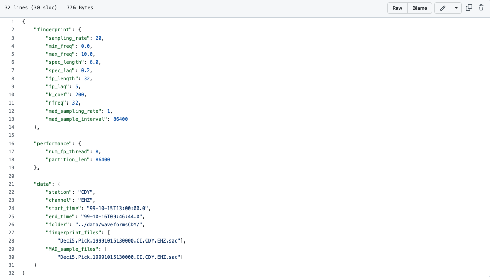
Info
File can be found in FAST/parameters/fingerprint/fp_input_CI_CDY_EHZ.json
Click here for an example fingerprint script such as:
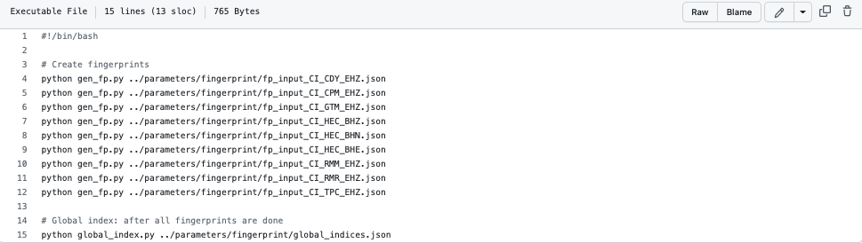
Info
File can be found in FAST/parameters/fingerprint/run_fp_HectorMine.sh